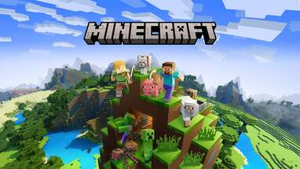
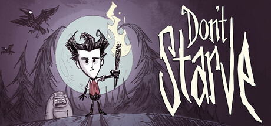
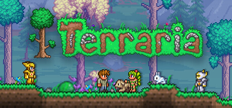

Building "Infinite" Worlds
From Minecraft to No Man's Sky: The math magic behind them.
Just like these games, developers don't hand-paint every mountain. They use Perlin Noise and FBM (Fractal Brownian Motion) to let computers "dream" up entire universes.



The Start: Pure Randomness Dilemma
🤔 The Problem:
If we simply ask the computer to roll a die and generate a random height between 0 and 1 for every point on the map, what happens?
👁️ Phenomenon:
This is the generated image. It looks like "static" or "snow" on an old TV (White Noise).
Explanation:
Because every point is independent. A point on the left might be 0 (black), and the one on the right might be 1 (white). Values jump drastically over tiny distances.
🚫 Conclusion: Unusable
Nature isn't like this. Mountains aren't isolated pixels. Nature is continuous.
Step 1: Interpolation & Smoothing
Since it's too chaotic, let's "smooth" it out.
Principle: Lower Resolution + Interpolation
Instead of generating random numbers for all 300x300 points, we generate them for just a 10x10 grid.
- Sampling: Pick random values on a sparse grid.
- Interpolation: For the empty spaces in between, we "guess" a transition value based on surrounding points.
Result: Smooth Noise
🤔 New Problem:
Although it's continuous, does it look like a mountain? Or more like melted ice cream? It seems to lack "structure".
Outcome: Value Noise
What we just got is algorithmically called Value Noise. Its core is defining Values at grid vertices.
Limitations:
- ❌ Lacks Direction: It's "isotropic", looking like round lumps without the directionality of mountain ranges.
- ❌ Blocky Artifacts: If you look closely, you can often see the underlying grid traces.
"It's like propping up a cloth with sticks underneath, it doesn't look natural enough."
Breakthrough: Perlin Noise
In 1983, Ken Perlin changed everything.
Core Change: From "Values" to "Gradients"
He stopped defining height values at vertices and instead defined random directional arrows (Gradient Vectors).
Perlin Noise Result
Notice the transitions between black and white, do they look more shaped than Value Noise?
🫣 Still Not Perfect?
Although it has shape, this image still looks too "smooth", like a plastic model. Real mountains have grand outlines and fine rocky details. Single-layer Perlin Noise can't achieve this.
Advanced: Introducing FBM
Fractal Brownian Motion
Since one layer of noise is too smooth, we stack multiple layers. The core idea of FBM is:
+
Medium Undulations (Mid Freq)
+
Micro Details (High Freq)
Single Layer Perlin Noise
Like blurry cotton candy
Multi-layer FBM Stack
Has rocky texture details
Lab: FBM Detail Generator
Manually adjust the superposition of waves with different frequencies to understand how terrain "grows".
🤔 A Key Question
We talked about "Randomness" (different every time) and "Smoothness" (natural continuity).
But when generating infinite maps like Minecraft, one more element is crucial.
What is this element?
🔑 Hashability / Consistency
The same input (Seed + Coordinates) must always yield the same output.
This is the core difference between procedural generation and pure randomness: it is "Deterministic Randomness".
What else can Perlin Noise & FBM do?
Beyond generating mountainous terrain, their uses are everywhere.
Dynamic Clouds & Fog
Using the time axis of 2D noise as a third dimension (3D Noise), slicing it creates cloud and fog effects that flow and deform naturally over time.
Fire & Water Textures
By using Domain Warping to distort texture coordinates, you can simulate the disturbed natural forms of fire or water ripples.
Biological Textures
Marble veins, wood grain, and even giraffe or zebra patterns are essentially noise patterns processed through specific mappings.
Camera Shake
Using Perlin Noise on a 1D time axis to control camera offsets simulates a realistic handheld camera shake, rather than mechanical random jitter.
References & Further Reading
Want to dive deeper into the math? Here are the best resources.
The Math Behind the Best-Selling Games: Perlin Noise
YouTube video explaining the underlying math concepts simply.
Perlin Noise Algorithm - Raouf's Blog
A very detailed tutorial covering implementation details of Value Noise and Perlin Noise.
Interactive Explainer Generated by AI